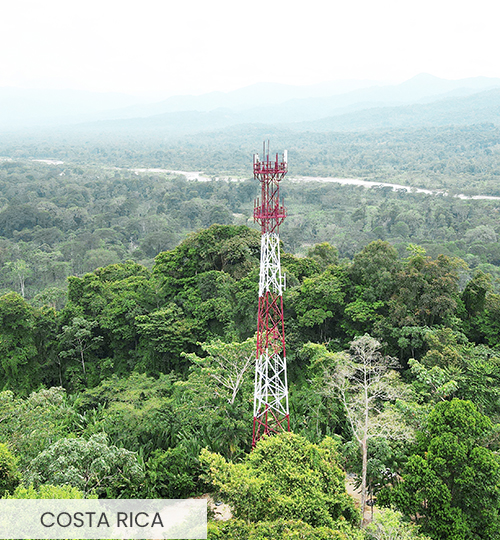

Búsqueda de Documentos Proyecto Canon
Explora la información de los proyectos Canon de Internet para Todos con la potencia de nuestro Agente IPTech impulsado por IA.

Explora la información de los proyectos Canon de Internet para Todos con la potencia de nuestro Agente IPTech impulsado por IA.